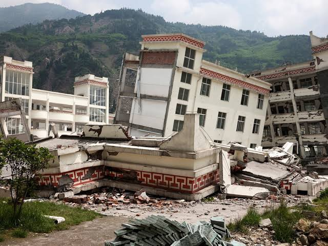

San Beda College Alabang accommodates a diverse community, spanning from young learners to graduate students. However, the presence of elementary and high school students, ages ranging from 5 to 18, poses a significant vulnerability in the face of potential disasters such as earthquakes or volcanic eruptions. Beyond demographic factors, the school's proximity to Taal Volcano, just 40.4 kilometers away, heightens the risk of adverse effects from volcanic activity. Additionally, its location along the West Valley Fault, notorious for producing powerful earthquakes, raises concerns, especially considering the fault's historical movement. West Valley Fault has an estimated 400-year recurrence interval. Its last known movement occurred in 1658, which is 358 years ago, raising the possibility that the area is overdue for another significant seismic event. Another concern is the aging infrastructure of certain buildings, notably the St. Scholastica building. This structure, housing hundreds of grade 11 students, exhibits signs of deterioration, including cracks in the ceilings, compromising student safety. To address these concerns and foster preparedness, we've developed this website, offering assessments, readiness strategies, and post-disaster support for the San Beda College Alabang community.
Significance:
Because of its proximity to the active Taal Volcano and location along the West Valley Fault, San Beda College Alabang is extremely vulnerable to disasters, especially earthquakes and volcanic eruptions. For this reason, developing a preparedness plan is important. A preparedness plan will provide people with specific information and guidance, empowering them to effectively respond when disasters strike
This plan not only provides guidance but also includes thorough assessments, predicting potential impacts on infrastructure and inhabitants. This prediction enables students and staff to prepare proactively, tailoring their responses based on the expected severity of the situation.
Moreover, the preparedness plan enables the creation of adaptable evacuation strategies. By implementing a comprehensive approach, SBCA can effectively mitigate risks and ensure a coordinated response, fostering resilience within the community amidst crisis.
In essence, the creation of a strong preparedness plan is crucial for San Beda College Alabang, as it not only enhances readiness but also supports the safety and well-being of all stakeholders in the face of unavoidable natural disasters.
Role of technology:
Preparedness is very important for schools like San Beda College Alabang which is located near a volcano and along a fault line, as they face unique risks from potential volcanic eruptions and seismic events. These can pose significant risks to the safety and well-being of students, teachers, and staff. Therefore, SBCA must implement comprehensive preparedness measures to mitigate these risks effectively.
One of the measures San Beda College Alabang can take is the use of technology. Technology plays a key role in enhancing preparedness actions by utilizing advanced monitoring systems, delivering early warning systems, and facilitating coordination and collaboration.
Utilization of Advanced Monitoring Technologies:
• Seismographs and GPS sensors track seismic activities.
• Detect early signs of volcanic eruptions or earthquakes.
• Allows timely warnings to schools and communities.
Early Warning Dissemination:
• Technology facilitates rapid transmission of alerts.
• Can be through text messages, phone calls, sirens, social media, and mobile apps.
• Ensures quick and efficient warning dissemination.
Coordination and Collaboration:
• Technology facilitates coordination among stakeholders.
• Online platforms and communication tools used.
• Allows sharing critical information, coordinating evacuation plans, and resource allocation.
• Enhances overall preparedness and response capabilities.
In conclusion, the importance of preparedness and the role of technology in early warning and response efforts cannot be overstated for San Beda College Alabang which is located near the Taal volcano and West Valley Fault. By embracing technological advancements and implementing comprehensive preparedness measures, SBCA can enhance its resilience to natural hazards and ensure the safety and well-being of its students and staff.
An earthquake is a rapid, intense shaking of the Earth's crust brought on by the movement of tectonic plates. It can cause a variety of effects, ranging from mild tremors to strong ground shaking, structural damage, and perhaps disastrous outcomes like landslides, tsunamis, and property and human loss. In the event of an earthquake, San Beda College Alabang could face significant impacts on its infrastructure, population, and critical facilities:

• Infrastructure Damage: Given the aging infrastructure and signs of deterioration in buildings like the St. Scholastica building, there is a high risk of structural damage during an earthquake. Cracks in ceilings could worsen, leading to potential collapse or further structural compromise, endangering the safety of students and faculty.
• Population: The population of SBCA is more than a thousand. This means that in the event of an earthquake, the impacts will be more severe. Students, teachers, and staff face the risk of injury or death from falling debris or structural collapse within crowded school buildings. The traumatic experience can lead to fear, anxiety, and PTSD, especially affecting children's vulnerability and worsening emotional distress within the school community. Additionally, students may become separated from their caregivers or family, adding to the confusion and distress. Reuniting families after the disaster can be challenging, particularly if communication and transportation systems are disrupted.
• Critical Facilities Impact: The functionality of critical facilities, such as classrooms, laboratories, and administrative buildings, could be severely affected by infrastructure damage. Disruption to these facilities may slow down the continuation of academic activities and administrative functions, affecting the overall operation of the school.
There are inherent risks when it comes to living near a volcano that should not be disregarded, which is why it is important to consider San Beda College Alabang's (SBCA) safety based upon its geological whereabouts. In order to guarantee the protection of the students, staff, and infrastructures from hazardous volcanic activities like pyroclastic flows, ashfall, and lahars, SBCA must carry out serious and full-out hazard assessments then implement the following safety measures:
1. Pyroclastic Flows – are fast-moving currents of hot gas and volcanic material that can descend a volcano’s slopes. It can inflict severe burns, damages toward infrastructures and vegetation.
Safety Measures:
2. Ashfall – a hard-rain of tiny, jagged particles of rock and natural glass ejected into the atmosphere when a volcano undergoes an eruption.
Safety Measures:
3. Lahars – are fast-moving mudflows that occur once volcanic matter links with water, such as rainfall or melting ice and snow.
Safety Measures:
Procedures for Implementation of Seismic and Volcanic Monitoring Stations Connected to a Central Alert System within Early Warning Systems and Communication:
1. Assessment of Risk: Identifying the areas prone to seismic events and volcanic eruptions using historical data and geological research.
2. Selection of Monitoring Sites: Determine ideal sites for monitoring stations taking into account accessibility, infrastructure, population density, and geological features.
3. Installation of Monitoring Equipment: Installing seismometers to detect ground vibrations, tiltmeters to measure ground deformation, and gas sensors to monitor volcanic emissions at the chosen locations.
4. Data Transmission Infrastructure: To Provide real-time data from monitoring stations to a central alarm system, establish a strong communication network. Installing wired or wireless communication devices, like satellite links or dedicated internet connections may be involved.
5. Central Alert System Setup: Create and implement a centralized alert system capable of receiving, analyzing, and sharing data from monitoring stations. Incorporate failover and redundancy techniques to reduce system downtime.
6. Threshold Setting: Establish specific levels of seismic activity and volcanic parameters that serve as triggers for alerts. Scientific study should serve as the foundation for these thresholds, which should be adjusted to avoid false alarms and provide timely warnings.
7. Alert Protocols: Create uniform procedures for issuing alerts to appropriate authorities, emergency responders, and the general public. Provide protocols for confirming the accuracy of the data and organizing the response.
8. Training and Education: Offer training to personnel tasked with operating and maintaining monitoring stations, interpreting data, and issuing alerts. Conduct public awareness initiatives to inform local populations of the value of readiness and emergency measures.
9. Testing and Drills: Regularly conduct tests and drills to assess the early warning system's effectiveness and acquaint stakeholders with response protocols. Determine the system's flaws and fill any holes.
10. Continuous Monitoring and Improvement: Establish a system for the continual maintenance of monitoring equipment and the constant monitoring of seismic and volcanic activity. Regularly evaluate and revise protocols, technology, and infrastructure to improve the efficiency of the early warning system.
Evacuation Plan
Establishing Prepared Evacuation Centers: Identifying, Location, and Preparation
During the eruption of Taal Volcano in 2023, Batangas City East Central Elementary School emerged as the primary evacuation center nearest to San Beda College Alabang, as detailed in Andreea Aro's article "Google Philippines makes map of Evacuation Centers in Batangas" published in the Manila Bulletin. Additionally, Poblacion 6 Brgy Hall was utilized as another evacuation site during the crisis, offering refuge to local residents. Looking ahead, Batangas City East Central Elementary School is expected to continue serving as a key evacuation center, ready to accommodate people in times of earthquakes, volcanic eruptions, and other potential disasters.
In the event of an emergency occurring at San Beda College Alabang, locating nearby potential evacuation centers is crucial. Here's a guide to help you find and prepare these centers, ensuring they are equipped with necessary emergency supplies:
Contact the Local Authorities:
Research:
Site Visits:
Contact Potential Evacuation Centers:
Prepare Emergency Supplies:
Emergency Planning and Training:
Community Engagement:
By taking these steps, you can help ensure that the University of Batangas and the surrounding community are adequately prepared to respond to emergencies and have access to appropriate evacuation centers stocked with emergency supplies.
Enhancing Evacuation Efficiency with Transportation Services
Given San Beda College Alabang's proximity to the Taal Volcano and the West Valley Fault, several strategies can be implemented to improve evacuation efficiency with transportation services, leveraging existing resources such as the school's bus service for students.
Preparedness Planning:
Strategic Prioritization:
Communication Systems:
Regular Training and Drills:
Flexible Routing:
To ensure everyone's safety during an emergency, buses should be equipped with first aid kits, blankets, water, and food. Additionally, keeping buses in good condition and filled with fuel allows for longer evacuations. To ensure a smooth evacuation, parents and guardians should learn about evacuation plans and transportation options.
San Beda College Alabang may improve its evacuation plans by including transportation options such as school buses. This allows them to use what they already have to keep everyone safe in an emergency.
Before going to the specifics of the plan, what is post-disaster recovery and support, and why is it important? Post-disaster recovery and support refers to the techniques and resources used to rebuild, restore, and assist communities, individuals, and infrastructure that have been harmed by a natural or man-made disaster. It involves an extensive plan created to facilitate recovery from a disaster and a return to normal. After a disaster, life preservation, reestablishing livelihoods, and community reconstruction depend heavily on the post-disaster recovery and support plan of the community.
Let's begin to talk about the post-disaster recovery and support plan.
The proposal advocates for the widespread adoption of trauma-informed treatment approaches that fundamentally acknowledge and address the profound, lasting effects that traumatic experiences can have on individuals and entire communities. For patients suffering from severe psychological distress, it is imperative that counseling and treatment prioritize exploring and processing any underlying trauma they may have endured. Counselors and therapists should be well-versed in trauma-responsive care that creates a safe, supportive environment for patients to confront and heal from their traumatic histories.
Furthermore, the proposal calls for actively promoting and facilitating the creation of community-based support groups. These groups would serve as essential platforms for those who have experienced trauma to openly share their emotions, recount their past traumatic experiences if they choose, and exchange coping strategies with others on a similar journey. The power of these support groups lies in fostering a profound sense of community, understanding, and fellowship among members - helping to minimize the alienation, disconnection and loneliness that trauma can often engender.
By integrating trauma-informed care at the clinical level alongside community-based support systems, this multi-pronged approach aims to holistically validate, understand and aid in resolving trauma's insidious psychological impacts. Collectively acknowledging trauma's influence, both for individuals and communities, is a crucial first step in enabling recovery, resilience and healing.
Preparedness and technology play important roles in mitigating earthquakes and volcanic eruptions. Given the proximity of San Beda College Alabang to the West Valley Fault and potential activity from Tall Volcano, the school must prioritize these precaution measures;
In conclusion, by prioritizing these preparedness measures and elevating technology, San Beda College Alabang can reduce the risks brought by earthquakes and volcanic eruptions, ensuring the safe of its community